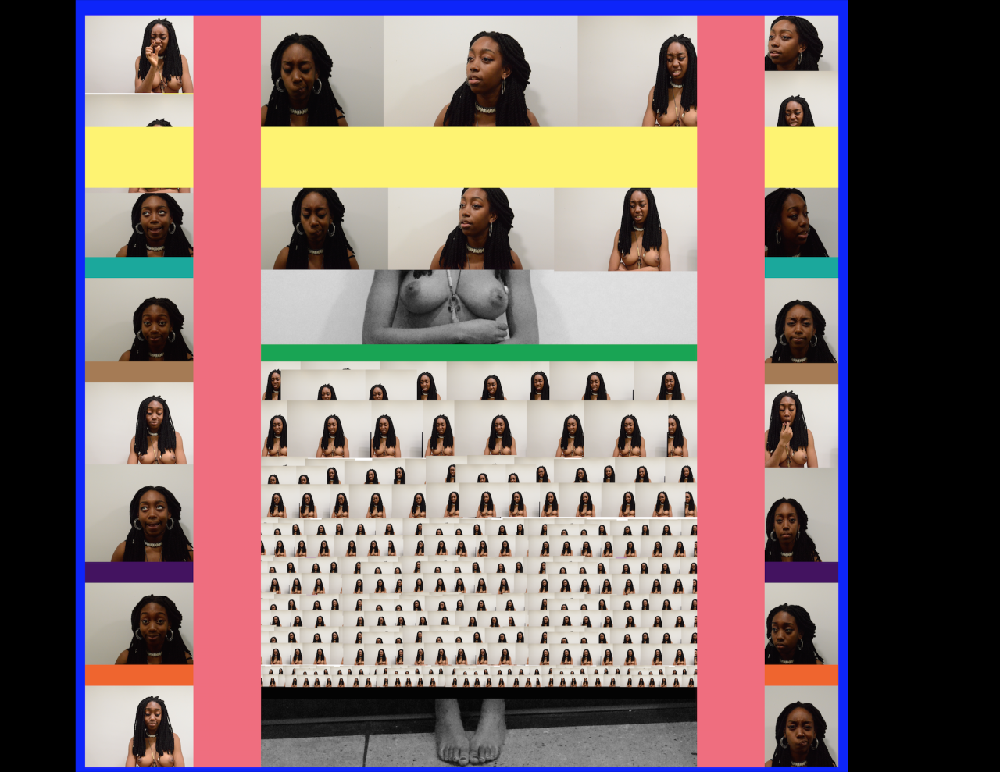
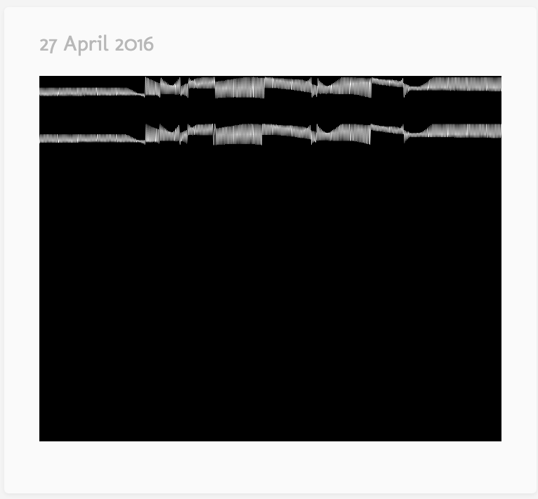

Digital Art // Spring 2016
First assignment of reconfiguring bodies using photoshop

Inspired by Hank Willis Thomas

Gif Project

Still Life

Self as Subject



Unheard: My final project utilized data from police brutality videos to create images that propelled one to think about the disproportionate exposure we have to violence which desensitizes us from it all together. The project used three mediums including a visualization I programmed to show how we can be overexposed to violence to the point that it becomes white noise.
For more work go here